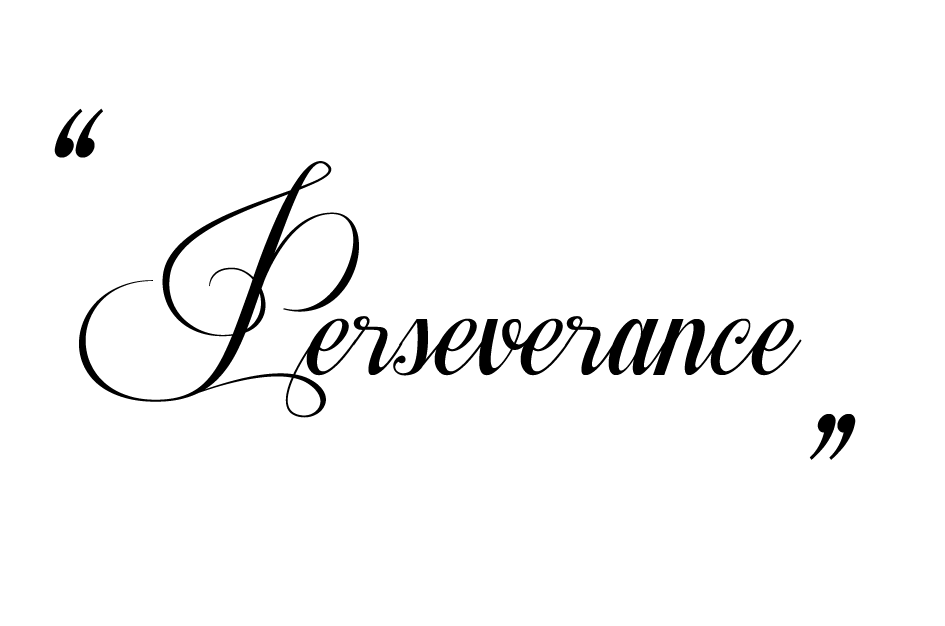

We are experienced music teachers in the Barrhaven area
that specializes in piano and brass instruments
Music was a passion in our youth, and later it defined our careers.
We both went to music schools as children and by the time we enrolled in university and conservatory, we were already teaching part-time.
After we became professional musicians and teachers, and we taught for many years in universities.

When we decided to immigrate to Canada, we started our own business here,
teaching privately. It was not an easy transition, but we were able to slowly expand our business. Our business was built from the foundation with our own efforts,
we are truly grateful for our achievements and our support, and we would be honored if you would like to share your passion with us.
To learn about specific lesson information